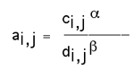
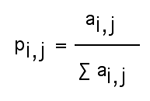

.
.Dr. Dobb's Journal September 2006
Biologically inspired computing arose around 20 years ago with the development of algorithms that simulate various aspects of natural processes to calculate useful results. For instance, neural networks imitate some aspects of learning in mammalian brains to learn complex patterns; simulated annealing simulates how metals cool into low-energy crystalline states to solve difficult minimization problems; and genetic algorithms use abstractions of mechanisms from evolution (selection, crossover, mutation) to traverse large search spaces. All have found their way into the computing mainstream, and all are regularly used in a wide range of real-world problems.
In this article, I examine a related technique that in many cases is the equal or better of existing optimization algorithms for a wide range of problems. Ant colony optimizers (ACOs) model ensembles of virtual insects that cooperate on various tasks. Remarkably, such ensembles can be used to produce answers to a range of complex problems, even though the simulated insects and the means they use to communicate are extremely simple. For instance, ACOs are currently being used to simulate complex routing problems in telecommunications networks, where the topology of the network can vary over time.
Ant colony algorithms are closely associated with Marco Dorigo, who described the concept in his Ph.D. thesis in 1992.
Ant colony optimization is an example of a swarm algorithm. If you have read Michael Crichton's thriller Prey (HarperCollins, 2002), which luridly describes swarms of semi-intelligent nanobots in competition with humans, you are familiar with some of the ideas behind this relevantly recently developed area. In a swarm algorithm, a large number of agents cooperate to achieve a global aim without requiring any central control point.
Swarm-based systems are highly fault-tolerant because the failure of one component in a swarm does not significantly degrade the overall performance of the system. This makes them particularly suitable for hazardous or remote environments, and the U.S. military and NASA are currently researching their use.
ACOs are a simple example of how simple systems can self-organize or show emergent behavior. Emergent behavior is not a well-defined term, but generally refers to complex and unexpected outcomes arising from the interaction of simple individual entities. Examples include bird flocking, creation of complex nests by colonies of termites, and (more controversially) structure in human societies, particularly economics and financial markets.
In this article, I construct a colony of virtual ants with a set of deliberately simplified abilities. After describing and setting up a simple mechanism by which these ants can communicate, I'll demonstrate how this virtual colony can solve a classic problem from operations research—the infamous Traveling Salesman problem.
The Traveling Salesman problem asks: Given a set of towns that a salesman has to visit, and the distances between each, what is the shortest tour that takes him or her to each town just once, ending up at the starting point?
This type of problem is NP-complete, which is mathematical jargon for "hard." With a small number of towns, it's feasible to try every possible route, but when the number increases, an exponential rise in the computations is required. A brute-force approach for any but the smallest tours requires unfeasibly large amounts of computer power and time.
For real problems, it's not always necessary to get the best solution; a good one is just as useful if it can be found in a short time. The ACO described here gives very good solutions to a test problem in a matter of seconds. And this is useful; the TSP is closely related to a number of important real-world problems in scheduling and design, so a solution to one can quickly be applied to others.
When traveling from their nest to food sources, a real ant deposits a chemical on the ground called a "pheromone." The ant uses this trail to find its way back to the nest, and other ants, which deposit more pheromone in turn, can then follow the trail. Over time, the colony of ants develops well-trodden paths, defined in part by the amount of pheromone left by ants that have previously traversed the same route. The ants never need to interact directly, as all the information about the actions of other ants comes from the strength of the pheromone trail. This indirect communication mechanism is called "stigmergy," a term that comes from the study of colonies of social insects.
The only features that ants in an ACO share with their real counterparts are:
At no point does any ant have an overview of the entire network. Instead, it is limited to sensing its immediate environment. This makes the ability to solve global optimization problems all the more impressive.
The algorithm works as follows. Initially, all trails have a small, random amount of pheromone already in place.
A worker ant sets out from the first city on the tour. At each city, the ant decides which is the next to be visited. For all cities that have not already been visited, the ant rates the attractiveness of traveling to that city by evaluating the following expression:
Here, ai,j measures the attractiveness of the route under consideration between towns i and j. ci,j is the pheromone concentration on the route between the current city and the destination under consideration. The higher the amount of pheromone, the more attractive is this path. The concentration is weighted by a power term .
di,j is the length of the route under consideration. The longer the route, the less attractive it will be. This term is also weighted by another power term .
The form of this equation shows that a nearby node with a large amount of pheromone on its route will be very attractive as a potential destination. Conversely, a distant node with very little pheromone will be unattractive. However, a distant node with a large amount of pheromone may be equally likely to be chosen as a close node with relatively little pheromone.
Turning the attractiveness (or otherwise) of the various paths into a decision about which path to take is relatively straightforward. If you add together all the attractiveness measures for each valid route and divide each measure by this total, you produce the probability that a given route will be taken, which is:
To avoid having to calculate actual probabilities, the next city can be chosen using roulette-wheel selection. For each possible destination city, the value of a is calculated and represented as an interval. These intervals are then placed end to end and a random point picked from this set of intervals. The wider the interval, the more likely that interval is to be hit and the corresponding city chosen as a destination. Conversely, attractiveness measuring near zero means that the city will be visited very infrequently. This is, in fact, what I've done in the code that accompanies the article (available at http://www.ddj.com/code).
The ant now repeats this process for each town, finally arriving back at its original starting point. The tour has been chosen purely in terms of probabilities, with the particular route chosen being driven by the attractiveness of each link.
After the artificial ant has completed its tour, it deposits an amount of pheromone along each link taken that is inversely proportional to the length of the tour. In other words, the shorter the tour, the more pheromone is deposited and the more attractive that particular route will be to other ants on subsequent tours.
Of course, real ants don't backtrack in this way. I update pheromone in this manner to make the algorithm simpler and to allow us to use discrete time intervals in the simulation. In reality, an ant is more likely to deposit pheromone at the same rate no matter which route it takes. (In fact, ants have been observed to deposit higher concentrations of pheromone on routes to especially rich food sources, but this refinement is unnecessary for the current problem.) However, it will follow a short route several times over in the time it takes to follow an alternative long route, so pheromone concentration will rise on the short route, which leads to the same result.
This process is now repeated for each ant in the population. I've set the number of ants equal to the number of cities in the tour, which gives quite acceptable results. Alternatively, the algorithm could be recast in terms of one ant, since ants never communicate directly.
When all ants have made a tour of the cities, a process called "evaporation" occurs. So far, I've only looked at ways in which pheromone concentrations increase. Evaporation decreases pheromone concentrations by decreasing all pheromone deposits at a constant rate p. If the concentration of pheromone at time t is ct, the concentration at time t+1 will be given by:
ct+1 = ct(1-p)
Evaporation means that, over time, a link that is barely used will see its pheromone concentration drop toward zero, thereby making it even less attractive. Links that are heavily used will continue to have pheromone deposited, which will make up for the evaporation loss. This was explained by Marco Dorigo et al. in "Ant algorithms for Discrete Optimization" (http://www.idsia.ch/~luca/ ij_23-alife99.pdf):
Pheromone evaporation allows the ant colony slowly to forget its past history so that it can direct its search toward new directions without being over-constrained by past decisions.
Now the whole process is repeated. The population quickly finds very good solutions that are typically close to the best known. Usually, the best route becomes locked in with high pheromone concentrations, while other routes see their pheromone drop to zero.
To illustrate a simple ACO in action, I present an implementation in C that finds the shortest closed route between 50 cities (also available electronically). This data is from the EILON50 dataset, a standard benchmark for the Traveling Salesman problem. The shortest tour known for this dataset is 427.96. This and other datasets can be found in the TSPLIB archive (http://www.iwr.uni-heidelberg.de/ groups/comopt/software/ TSPLIB95/).
The code has been written to compile with Microsoft Visual C++, but it should be readily portable to other environments. The supplied code has alpha set to 1, beta to 2, and rho to 0.5. The program always converges to within a few percent of the best solution known within 100 or fewer passes over the training set. To achieve this sort of solution in seconds on a desktop PC is an impressive testament to the power of the algorithm.
This implementation of the ACO algorithm is simple by design, and many improvements on the basic idea have been found in the last few years. For instance, some researchers have linked the ACO algorithm with the ability to perform local optimization. A good starting place for interested readers is Marco Dorigo et al.'s book Ant Colony Optimization (MIT Press, 2004).
DDJ
|
Understanding ACO Algorithms The key to understanding ACO algorithms is that they are a deceptively subtle mix between a greedy, short-term search and an altruistic, evenhanded search. Using either type of search in isolation doesn't work. Only when they are put together do the bad features of each cancel out and the true power of the algorithm emerge. How does this work? Suppose the attractiveness equation just included a distance term, and ignored the pheromone term. The result will be that the ants immediately go for whichever local route is shortest (a "greedy" search). This is a good strategy for very small networks, but typically fails abysmally when more complex network topologies are being considered because the ants cannot consider the broader implications of looking further afield. Conversely, suppose the attractiveness of links is just measured by pheromone concentration, and ignores distance to the next city. Typically, the algorithm will stagnate, which means that the ants stop searching for new solutions and become stuck on suboptimal tours. This happens because the amounts of pheromone on some links are so high that the probability of choosing any others is virtually zero, so the links have more pheromone added, and so on. In other words, the algorithm gets stuck in a positive feedback loop and cannot break out to find better solutions. Fortunately, the exact values of alpha and beta are not too critical. Values for each between 1 and 5 give consistent convergence for this problem. To see what happens when either term is taken out of our search, try setting its exponent to zero in the source code (available at http://www.ddj.com/code/). —A.C. |